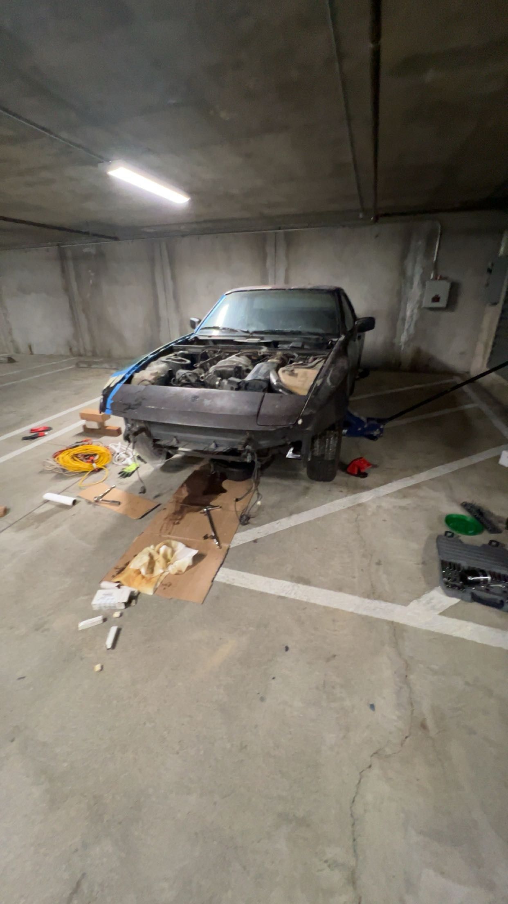
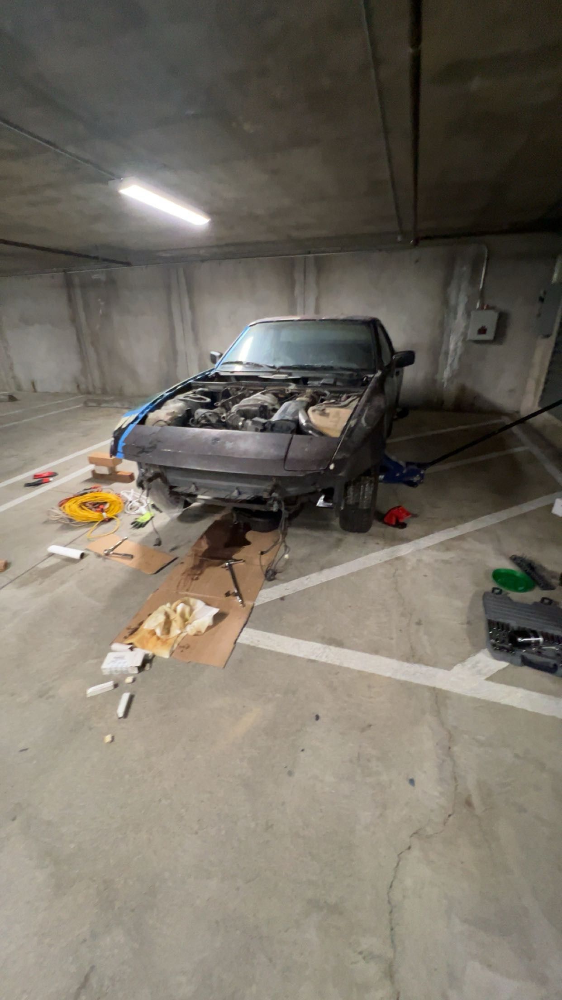
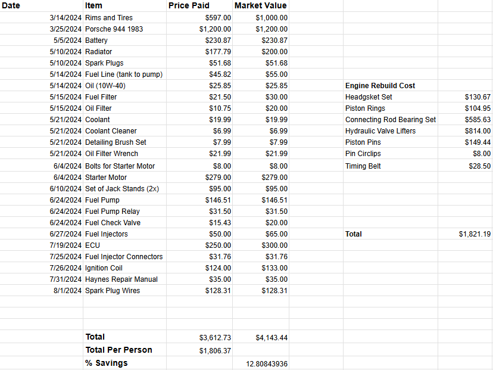
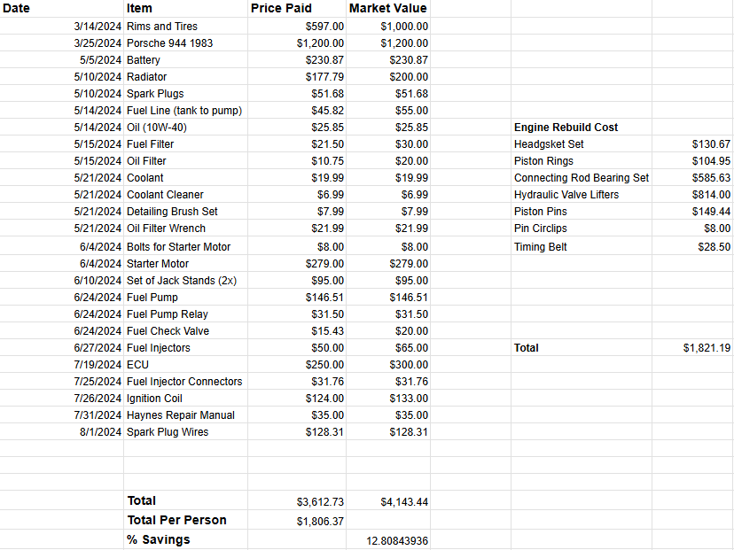

CSUF Baja SAE
Assisted seniors with suspension kinematics (2D and 3D) in SolidWorks, as well as prototyping, preparing for manufacturing.

Overview
The senior design team decided to create all new suspension kinematics from the previous year's car. I assisted in calculations, and design of the suspension system.
Design Process
After obtaining the desired suspension geometry, I used SolidWorks to create a jig to hold a mockup of suspension components, made out of PVC pipe, properly in place to make sure everything functions as expected.
Current State
At the moment we are working on 3D printing the jig components so we can create the PVC pipe mockup.
Gallery
 

 
